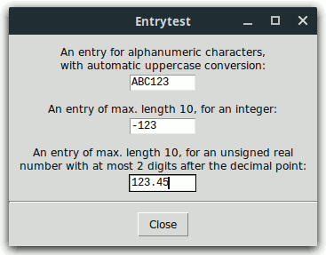
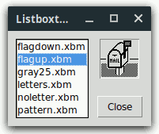
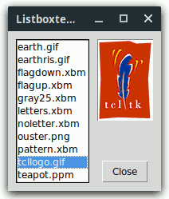
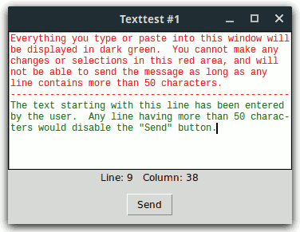
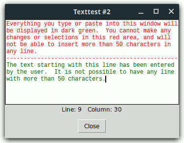

insert Callbacks for entry
Widgetsselset Callback for a listbox
Widgetactivate Callback for a listbox
WidgetMany Tcl/Tk programmers are confronted with questions like the following:
In most books, FAQs, newsgroup articles, and widget sets, you can find individual solutions to some of the above problems by means of widget bindings. This approach is based on adding new binding tags or modifying some of the existing ones, which quite often proves to be incomplete.
The Tk core addresses just a few of the above problems: In Tk 8.1
the <<ListboxSelect>> virtual event for listbox
widgets was introduced, Tk versions 8.3 and higher support widget options for
entry validation, and the spinbox widget (introduced in Tk 8.4) provides the
same validation facility. Finally, Tk versions 8.4 and higher support
the disabled state for listbox widgets, as well as the
modified flag, the <<Modified>> and
<<Selection>> virtual events, and an undo/redo
mechanism for text widgets. However, also these improvements are of
individual nature.
The Widget callback package Wcb provides a completely
different, general solution to the above problems: Based on
redefining the Tcl command corresponding to a widget, the main Wcb procedure
wcb::callback enables you to
associate arbitrary commands with some Tk entry, tile entry, BWidget Entry,
Tk spinbox, tile spinbox, tile combobox, listbox, tablelist, tile treeview,
text, and ctext widget operations. These commands will be invoked
automatically in the global scope whenever the respective widget operation is
executed. You can request that these commands be called either before
or after executing the respective widget operation, i.e., you can define both
before- and after-callbacks. From within a
before-callback, you can cancel the respective widget command by invoking the
procedure wcb::cancel, or
modify its arguments by calling wcb::extend or wcb::replace.
Besides these (and four other) general-purpose commands, the Wcb package
exports four utility procedures for Tk entry, tile entry, BWidget Entry, Tk
spinbox, tile spinbox, and tile combobox widgets, as well as some
before-insert callbacks for Tk
entry, tile entry, BWidget Entry, Tk spinbox, tile spinbox, tile
combobox, text, and ctext widgets, which
you can use unchanged or modify to suit your needs. To learn how to do
this, have a look at the Examples section below.
The Wcb package is implemented in pure Tcl/Tk code, which makes it completely platform-independent and very easy to install. It requires version 8.0 or higher of both Tcl and Tk.
Wcb is available for free download from the Web page
http://www.nemethi.de
The distribution file is wcb3.6.tar.gz for UNIX and
wcb3_6.zip for Windows. These files contain the same
information, except for the additional carriage return character preceding
the linefeed at the end of each line in the text files for Windows.
Wcb is also included in tklib, which has the address
http://core.tcl.tk/tklib
Install the package as a subdirectory of one of the directories given by
the auto_path variable. For example, you can install it as
a directory at the same level as the Tcl and Tk script libraries. The
locations of these library directories are given by the
tcl_library and tk_library variables,
respectively.
To install Wcb on UNIX, cd to the desired directory
and unpack the distribution file wcb3.6.tar.gz:
gunzip -c wcb3.6.tar.gz | tar -xf -
This command will create a directory named wcb3.6, with the
subdirectories demos, doc, and
scripts.
On Windows, use WinZip or some other program capable of unpacking
the distribution file wcb3_6.zip into the directory
wcb3.6, with the subdirectories demos,
doc, and scripts.
Notice that in tklib the Wcb demos directory is replaced with
the subdirectory wcb of the examples
directory. Please take this into account when reading the examples below.
To be able to access the commands and variables defined in the package Wcb, your scripts must contain one of the lines
package require wcb ?version? package require Wcb ?version?
You can use either one of the two statements above because the file
wcb.tcl contains both lines
package provide wcb ... package provide Wcb ...
You are free to remove one of these two lines from wcb.tcl if
you want to prevent the package from making itself known under two different
names. Of course, by doing so you restrict the argument of
package require to a single name.
Please note that ActiveTcl versions 8.5 and later use a modified
package mechanism, which only exports the all-lowercase name
wcb. For this reason, the examples below use the statement package require
wcb.
Since the package Wcb is implemented in its own namespace called
wcb, you must either invoke the
namespace import wcb::pattern ?wcb::pattern ...?
command to import the procedures you need, or use qualified names
like wcb::callback. In the examples below we have chosen
the latter approach.
To access Wcb variables, you must use qualified names.
There are only two Wcb variables that are designed to be accessed outside the
namespace wcb:
wcb::version holds the current version number
of the Wcb package.wcb::library holds the location of the Wcb
installation directory.insert Callbacks for entry
WidgetsThe script entrytest.tcl in the demos directory
creates three entry widgets with the constraints shown in the following
figure:

For the topmost entry .e1 we define two
before-insert callbacks contained in the Wcb package:
wcb::callback .e1 before insert wcb::checkStrForAlnum \
wcb::convStrToUpper
To force the second entry .e2 to accept only integers of
maximal length 10, we use again two before-insert callbacks from
Wcb:
wcb::callback .e2 before insert {wcb::checkEntryLen 10} \
wcb::checkEntryForInt
And finally, here are the two callbacks for the third entry widget
.e3:
wcb::callback .e3 before insert {wcb::checkEntryLen 10} \
checkNumber
#
# Callback procedure checkNumber
#
proc checkNumber {w idx str} {
set newText [wcb::postInsertEntryText $w $idx $str]
if {![regexp {^[0-9]*\.?[0-9]?[0-9]?$} $newText]} {
wcb::cancel
}
}
This last example also shows the arguments of the callbacks declared with
the wcb::callback
command: Whenever a callback is invoked, the name of the original Tcl
command for the widget as well as the arguments of the respective widget
operation are automatically appended to it as parameters. Since we
defined checkNumber as a before-callback for the
insert subcommand, its last three arguments must be: the name of
the original entry widget command (w), the index
(idx), and the string (str) to be inserted just
before the character indicated by the index.
Notice that in the argument list of a Wcb callback, the name of the
original Tcl widget command can be be preceded by any number of additional
arguments. The procedure wcb::checkEntryLen is an example of such a
callback.
The command wcb::postInsertEntryText invoked
in the procedure checkNumber returns the text that would be
contained in the entry widget w after inserting the string
str before the character indicated by the index
idx. If this text is not (the starting part of) an
unsigned real number with at most two digits after the decimal point, then we
call the procedure wcb::cancel,
which aborts the insert command.
Without the constraint that the content of the third entry must not start
with a sign, we could have used the callback procedure wcb::checkEntryForFixed instead of
checkNumber:
wcb::callback .e3 before insert {wcb::checkEntryLen 10} \
{wcb::checkEntryForFixed 2}
selset Callback for a listbox WidgetIn the case of a listbox, you will probably most often want to define a
callback for the selection set widget
subcommand. In most cases it does not matter whether this is a before-
or after-callback. Please note that the wcb::callback command expects the
abbreviated form selset as parameter. Similarly, you must
pass selclear to this command when defining a callback for
the selection clear listbox operation.
In the following example we build a listbox .lb containing
the names of the bitmap files in the subdirectory images of the
directory demos in the Tk library directory. Whenever an
item is selected, the callback procedure showBitmap will display
the corresponding bitmap in the label .picture.

Here is the relevant code fragment from the script
listboxtest1.tcl, contained in the demos
directory:
set dirName [file join $tk_library demos images]
#
# Frame .spacer and listbox .lb
#
frame .spacer -width 10
listbox .lb -height 0 -width 0 -background gray98
if {$tk_version < 8.5} {
set pattern [file join $dirName *.bmp]
} else {
set pattern [file join $dirName *.xbm]
}
foreach pathName [lsort [glob $pattern]] {
.lb insert end [file tail $pathName]
}
#
# Label .picture
#
label .picture -relief sunken
#
# Define a before-selset callback for .lb
#
wcb::callback .lb before selset showBitmap
#
# Callback procedure showBitmap
#
proc showBitmap {w first args} {
global dirName
set pathName [file join $dirName [$w get $first]]
.picture configure -bitmap @$pathName
}
Recall that the selection set listbox operation
takes as arguments one or two indices, which will be passed automatically to
the callback as parameters, along with the name of the original Tcl command
associated with the listbox widget. For this reason, the arguments of
the callback procedure showBitmap are: the name of the original
listbox widget command (w), the first index
(first), as well as the args keyword representing
the empty list or the optional second index passed to the
selection set command.
activate Callback for a listbox
WidgetThe listbox used in the preceding example has the default selection mode
browse, hence the before-selset callback
showBitmap will be fired every time the mouse is dragged from
one element to another, with button 1 down. But what happens if we want
to display not only the bitmaps but also the photo images contained in the
subdirectory images of the directory demos in the
Tk library directory? Loading a photo image is a much more complex
operation than loading a bitmap, which can have the effect that some images
cannot be displayed quickly enough to follow the mouse when browsing with it
within the listbox.

To solve this problem, we can either change the selection mode to have the
less common value single, or arrange for the images not to be
displayed when browsing with the mouse but when releasing its button 1.
The second method can be implemented with the aid of an activate
callback, as shown in the following code fragment taken from the script
listboxtest2.tcl, contained in the demos
directory:
set dirName [file join $tk_library demos images]
image create photo photoImage
#
# Frame .spacer and listbox .lb
#
frame .spacer -width 10
listbox .lb -height 0 -width 0 -background gray98
set pattern [file join $dirName *]
foreach pathName [lsort [glob $pattern]] {
.lb insert end [file tail $pathName]
}
#
# Label .picture
#
label .picture -relief sunken
#
# Define a before-activate callback for .lb
#
wcb::callback .lb before activate showPicture
#
# Callback procedure showPicture
#
proc showPicture {w idx} {
set leafName [$w get $idx]
#
# When traversing the listbox with the arrow keys, the value
# of idx can become -1 or the number of listbox elements,
# hence the value of leafName can be an empty string:
#
if {[string compare $leafName ""] == 0} {
return ""
}
global dirName
set pathName [file join $dirName $leafName]
if {[regexp {^\.(bmp|xbm)$} [file extension $pathName]]} {
.picture configure -bitmap @$pathName -image ""
} else {
photoImage configure -file $pathName
.picture configure -bitmap "" -image photoImage
}
}
The script texttest1.tcl in the demos directory
creates the text widget shown in the following figure:

Here is the relevant code fragment:
#
# Text .txt
#
set width 50
text .txt -width $width -height 12 -setgrid true -wrap none -background white \
-font "Courier -12"
.txt tag configure prog -foreground red
.txt tag configure user -foreground DarkGreen
.txt insert end "Everything you type or paste into this window will\n" prog
.txt insert end "be displayed in dark green. You cannot make any\n" prog
.txt insert end "changes or selections in this red area, and will\n" prog
.txt insert end "not be able to send the message as long as any\n" prog
.txt insert end "line contains more than $width characters.\n" prog
.txt insert end "--------------------------------------------------\n" prog
set limit [.txt index insert]
#
# Label .pos displaying the current cursor position
#
label .pos -textvariable pos
#
# Button .send (actually, it does not send anything)
#
button .send -text Send -command exit
#
# Define 5 before- and 2 after-callbacks for .txt
#
wcb::callback .txt before insert protectRedArea changeColor
wcb::callback .txt before delete protectRedArea
wcb::callback .txt before selset protectRedArea
wcb::callback .txt before motion displayPos
wcb::callback .txt after insert "checkLines $width"
wcb::callback .txt after delete "checkLines $width"
#
# Callback procedure protectRedArea
#
# The parameters following w can be interpreted either as
# "index string ?tagList string tagList ...?" (for an insert
# callback), or as "from ?to?" (for a delete callback),
# or as "from ?to from to ...?" (for a selset callback).
#
proc protectRedArea {w idx args} {
global limit
if {[$w compare $idx < $limit]} {
wcb::cancel
}
}
#
# Callback procedure changeColor
#
proc changeColor {w args} {
wcb::extend user
}
#
# Callback procedure displayPos
#
proc displayPos {w idx} {
set index [$w index $idx]
scan $index "%d.%d" line column
incr column
global pos
set pos [format "Line: %d Column: %d" $line $column]
}
#
# Callback procedure checkLines
#
# The parameter args can be interpreted both as "index
# string ?tagList string tagList ...?" (for an insert
# callback) and as "from ?to?" (for a delete callback).
#
proc checkLines {maxCharsPerLine w args} {
#
# Display the new cursor position
#
displayPos $w insert
#
# Disable or enable the .send button
#
scan [$w index end] "%d" lastLine
for {set line 1} {$line < $lastLine} {incr line} {
scan [$w index $line.end] "%d.%d" dummy charsInLine
if {$charsInLine > $maxCharsPerLine} {
.send configure -state disabled
return ""
}
}
.send configure -state normal
}
. . .
displayPos .txt insert
focus .txt
The procedure protectRedArea is a before-insert,
before-delete, and before-selset callback. It
checks whether the attempted change would affect the text area displayed in
red; if this is the case, it calls the procedure wcb::cancel, which aborts the
insert, delete, or tag add
sel command, respectively.
The before-insert callback changeColor invokes
the wcb::extend command to
append the user tag to the argument list of the
insert command, thus changing the foreground color of the
characters entered by the user to DarkGreen.
The procedure displayPos displays the line and column
corresponding to the index passed to it as its second argument. This
index will be the target position of the insertion cursor when the procedure
is triggered automatically as a before-motion callback. As
seen in the checkLines procedure discussed below, it is also
invoked after performing an insert or delete
operation; in that case, its second argument will be the new position of the
insertion cursor after the execution of insert or
delete. In this way, we are able to keep track completely
of the position of the insertion cursor.
It is interesting to see what happens if we register
displayPos as an after- instead of before-motion
callback. Well, in that case the procedure would have to ignore its
second argument and we would have to replace the line
set index [$w index $idx]
with
set index [$w index insert]
The reason is that the value of the idx argument passed to
displayPos can be, for instance, insert+1c, where
insert means the position of the insertion cursor before
moving it forward by one character. The after-motion
callback is, however, triggered after the insertion cursor has been
moved, and at that time the insert mark already points to the
new cursor position. For this reason, [$w index
$idx] is not adequate to retrieve the position of the insertion
cursor within an after-motion callback.
Our last procedure checkLines is both an
after-insert and after-delete callback. After
calling displayPos to display the new cursor position, it
disables or enables the .send button, depending upon whether any
line of the text widget contains more than $maxCharsPerLine
characters.
Notice that we could also have defined before-replace and
after-replace callbacks for the replace text widget
subcommand, introduced in Tk version 8.6. There is, however, no need
for it, because the default text widget bindings currently don't make use of
this subcommand.
Instead of just disabling the .send button if any line has
more than $maxCharsPerLine characters, we can even prevent the
user from entering lines that are longer than allowed. The script
texttest2.tcl in the demos directory shows how this
can be achieved by combining widget callbacks with the undo mechanism for
text widgets, introduced in Tk 8.4. This script creates the text widget
shown in the following figure:

Most of the code contained in the script texttest2.tcl is
identical to the one in the previous example. The main difference is a
new line activating the undo mechanism for the text widget .txt
and a new version of the callback procedure checkLines:
. . .
.txt configure -undo yes
. . .
proc checkLines {maxCharsPerLine w args} {
#
# Undo the last insert or delete action if necessary
#
scan [$w index end] "%d" lastLine
for {set line 1} {$line < $lastLine} {incr line} {
scan [$w index $line.end] "%d.%d" dummy charsInLine
if {$charsInLine > $maxCharsPerLine} {
$w edit undo
bell
break
}
}
#
# Clear the undo and redo stacks, and display the new cursor position
#
$w edit reset
displayPos $w insert
}
. . .
This version of the callback checkLines undoes the last edit
action if any text line contains more characters than the allowed
maximum. For this reason, we had to move the invocation of the
displayPos procedure to the end of the callback, because
the edit undo command might change the position of
the insertion cursor.
Note that we could have implemented this example also without making use of the undo mechanism for text widgets, by saving the last accepted contents of the widget, along with the cursor position, and restoring them in case any line gets longer than allowed. The resulting script would then run with Tk versions earlier than 8.4, too.